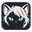
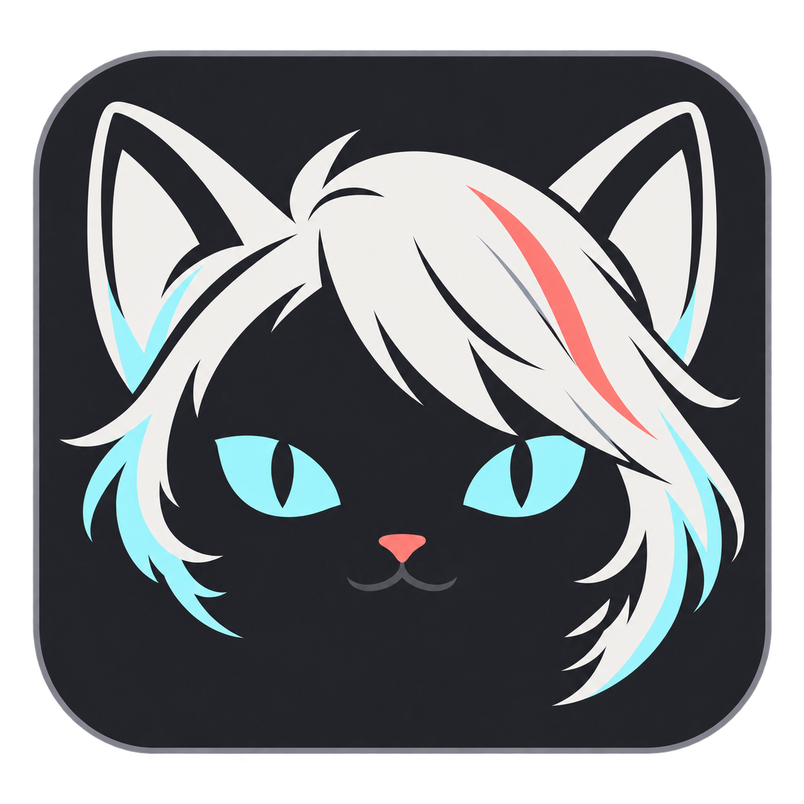

LIGHT · 小尺寸实际效果
16–24 px 使用简化版本，32 px 起保留完整表情。
DARK · 深色界面
圆角石墨底保持轮廓，银白与青色提供识别。

Cindy OMP侧栏 / 标题栏 / 网页页签 / 应用图标
桌面伙伴
托盘与紧凑视图 · 图标简化，角色保持一致

银发是搭档的记号，青色猫眼是专注的目光。
一个可在桌面上辨认的共同形象。
16–24 px 使用简化版本，32 px 起保留完整表情。
圆角石墨底保持轮廓，银白与青色提供识别。

Cindy OMP侧栏 / 标题栏 / 网页页签 / 应用图标
托盘与紧凑视图 · 图标简化，角色保持一致